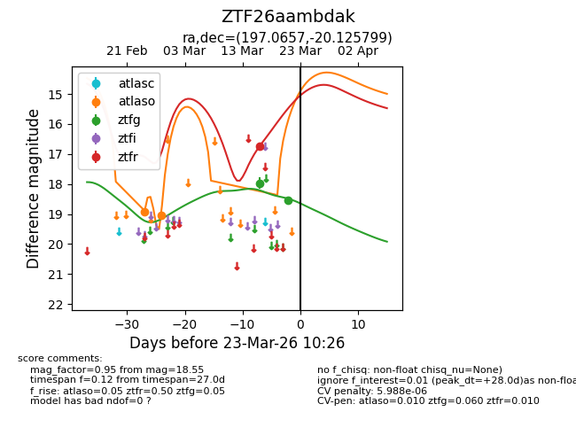
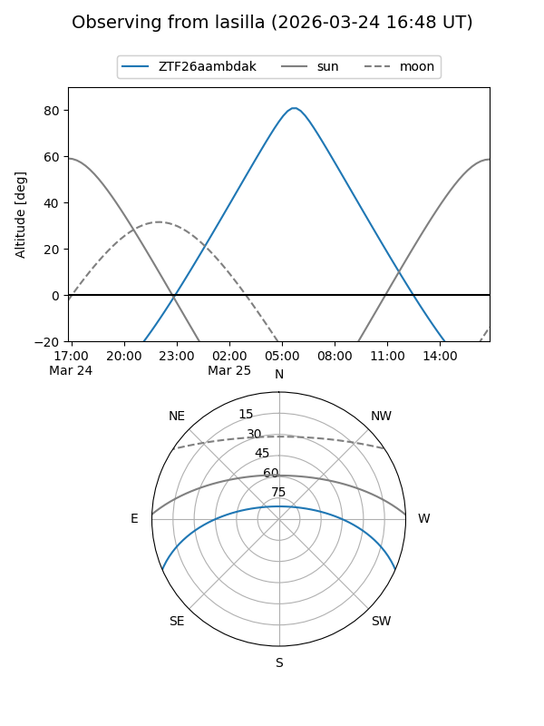
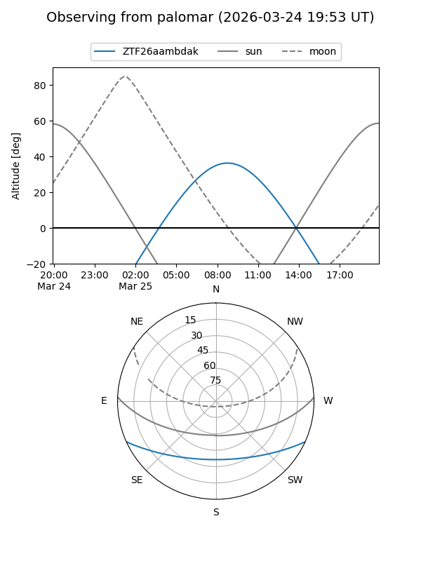
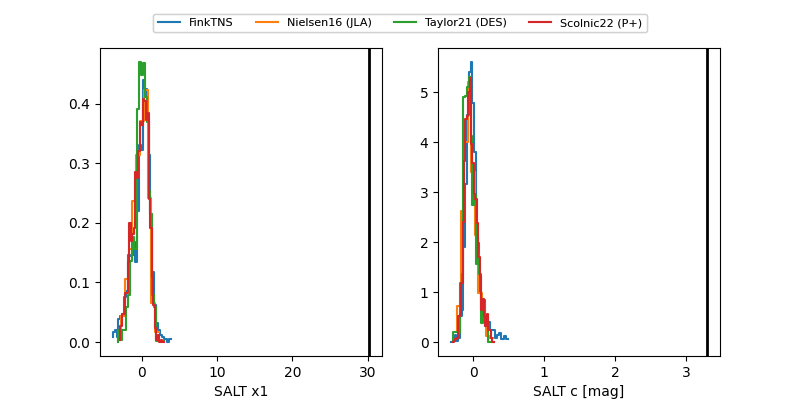

ZTF26aambdak
Target ZTF26aambdak at 2026-03-23 10:28
Aliases and brokers:
FINK: link
Lasair: link
ALeRCE: link
alt names
ZTF26aambdak (ztf,fink_ztf)
Coordinates:
equatorial (ra, dec) = 197.0657,-20.12580
equatorial (HMS+DMS) = 13:08:15.77,-20:07:32.88
galactic (l, b) = (308.2977,+42.57059)
Flags:
likely cv
Photometry:
last atlaso=19.04, ztfg=18.55, ztfr=16.74
2 atlaso, 2 ztfg, 1 ztfr detections
Lightcurve

Visibility


Additional plots
